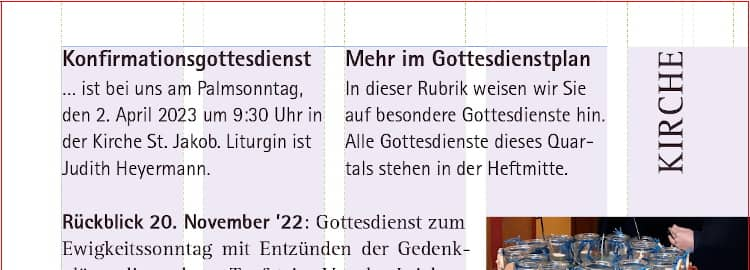
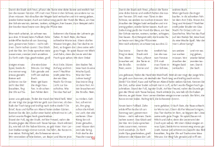
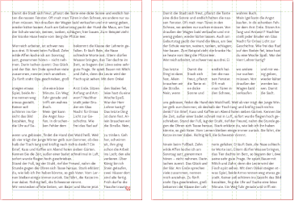
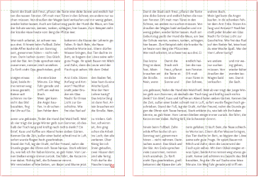

Manches soll nicht gleich in der Timeline versinken …
Auf dieser Website ist Raum für das, wofür meinem Mastodon-Account @charakterziffer zu kurzlebig ist. Mein Blog ist als Plus zu meinen Posts gedacht, eben „@cz+“. // Die letzten drei Artikel:
Doch, in diesem Blogartikel geht es tatsächlich um einen mathematischen Bruch, nämlich 1⁄7. Als Dezimalzahl mit Komma ist das 0,1428571428571428… Es sind immer die gleichen sechs Ziffern, die sich wiederholen. In der Mathematik nennt man das „Periode“ und markiert die Ziffern mit einem Strich darüber: 0,142857. Zwei andere Beispiele zum Verständnis: 4⁄27 schreibt man dezimal als 0,148 (also 0,14814814…) und 5⁄6 sind 0,83 (= 0,83333… – die erste 8 wiederholt sich nicht).
Immer die gleichen Ziffern
Aber zurück zu den Siebteln. Wenn man zwei davon hat, sind das dezimal 0,285714 – die gleichen sechs Ziffern in der gleichen Reihenfolge, nur dass es diesmal bei der 2 losgeht. Und so ist das auch bei drei, vier, fünf und sechs Siebteln:
Überall taucht die gleiche Ziffernfolge auf. Und darin befinden sich dann auch noch Zahlen aus dem 7er-Einmaleins: 7, 14, 28. Das ist doch nicht normal! Nein, ist es nicht. Bei Sechsteln ist es zum Beispiel ganz anders. 1⁄6 ist dezimal 0,16 (es wiederholt sich die 6), 2⁄6 sind 0,3 (die 3 wiederholt sich), 3⁄6 ergibt 0,5 ganz ohne Wiederholung.
Es hat etwas damit zu tun, ob im Nenner eine Primzahl (bzw. ein Primfaktor) steckt, also eine Zahl wie 2, 3, 5, 7, 11, 13, 17, … die ohne Rest nur durch 1 oder durch sich selbst teilbar ist. Und auch mit unserem Dezimalsystem hat es zu tun, das auf der Zahl 10 beruht. Weil 2 und 5 zwar Primzahlen, aber auch Teiler von 10 sind, ergeben die Brüche 1⁄2 und 1⁄5 in Dezimalschreibweise auch keine sich wiederholenden Nachkommastellen (nur 0,5 bzw. 0,2).
Andere Nenner
In den Nachkommastellen von Dreizehnteln tauchen zwei verschiedene, sich wiederholende Ziffernreihen auf:
Tendenziell werden die Perioden immer länger (und langweiliger). Aber so kurze Ziffernfolgen wie bei 1⁄37 (= 0,027) haben mich dann wieder an eine Sache im Mathematikunterricht erinnert. Man kann periodische Nachkomma-Stellen mit Brüchen ausdrücken, die nur 9er im Nenner haben (sprich 1⁄9, 1⁄99, 1⁄999 usw.).
Alle Neune!
1⁄9 entspricht dezimal 0,1 – und hat eine Periode mit einer Ziffer. Folglich sind 2⁄9 gleich 0,2 und beispielsweise 7⁄9 gleich 0,7.
Beim Bruch 1⁄99 ergibt sich eine Periode mit zwei wiederholten Ziffern. So sind 4⁄99 gleich 0,04 und 57⁄99 gleich 0,57.
Und 1⁄37 (0,027)? Das müsste dann ja das gleiche sein wie 27⁄999 – kurz nachrechnen, Zähler und Nenner durch 27 teilen … jepp, stimmt.
Aber damit lassen wir es mal bewenden. Schließlich geht es in diesem Artikel ja nicht um Neuntel ;-) Ungeklärt soll hier bleiben, wie man aus dem Nenner auf die Länge der Periode schließen kann (wird bei Wikipedia verraten) und nach welchem System sich beim gleichen Nenner die Ziffernfolgen wiederholen. Vielleicht regt euch dieser Artikel ja zu kleinen Zahlenüberlegungen oder anderen Experimenten an, z. B. wie teilt man einen Kuchen in sieben Stücke, wie zeichnet man einen Stern mit sieben Zacken, was ist der Vorteil einer 7-Tage-Woche, etc.
In einem alten Notizkalender habe ich frühe Texte von mir entdeckt. Es sind meist Dialoge, teils recht witzig und vor allem kurz. Inspiriert hat mich damals bestimmt das Kurzhörspiel-Format Wurfsendung, das der Dlf Kultur seit 2004 in sein Programm streut. Statt meine Texte im alten Kalender verstauben zu lassen, hole ich ein paar davon mal öffentlich hier ins Blog. Viel Vergnügen!
Telefon-Couch
Tastentöne, es wird gewählt. Freizeichen, man nimmt ab
Angerufener(ruhig): Hier Doktor Matthias Fröhlich, mit wem spreche ich? … Nur keine Scheu, hier ist alles streng vertraulich … Ich möchte Ihnen doch nur helfen. Geben Sie sich einen Ruck und schildern Sie mir Ihr Problem …
Was fühlen Sie, wenn Sie schweigen? Ist es Ihnen unangenehm? Wollen Sie sich verstecken? … Keine Angst, niemand will Ihnen etwas tun. … Ich spüre, dass Ihr Schweigen Sie belastet. Stellen Sie sich Ihren Gefühlen, nur Mut! …
Ja, so ist es richtig, schweigen Sie sich aus … Sehen Sie, schon geht es Ihnen besser. Es ist doch niemand allein, das müssen Sie sich immer wieder sagen. Und rufen Sie mich ruhig wieder an! Sie machen Fortschritte. Für heute bin ich froh, dass wie darüber geschwiegen haben.
Auflegen, Tutzeichen des Telefons
Still, still, still
Junge: Aber ich habe die Dose überhaupt nicht angerührt, Mami.
Mutter: Und was ist das? Sie ist völlig leer!
Junge: Ich schwöre es, ich habe keinen einzigen Keks genommen!
Mutter: So? Und wer soll es dann gewesen sein?
Junge(zögerlich): Es war … es war Peter.
Mutter(verärgert): Peter? Erzähl doch keine Lügen! Welcher Peter denn?
Junge(geheimnisvoll): Es … ist ein Junge, so wie ich. Manchmal kommt er in mein Zimmer. Er sagt, er hasst Menschen die schreien. Deshalb bin ich immer ganz leise.
Mutter(wütend): Jetzt reicht’s aber! Es gibt keinen Peter. Wenn du die Kekse genommen hast, dann gib es wenigstens zu!
Junge(erschrocken): Mama, da ist Peter. Bitte sprich leiser!
Mutter(schreit): Was fällt dir eigentlich ein? Es gibt keinen Peter. Jeder ist selbst für das verantwortlich, was er tut.
Junge(flehend, leise): Mama, bitte! Er steht hinter dir, glaub mir doch!
Mutter(sauer): Ich sehe keinen Peter. Aber wenn du dich nicht sofort entschuldigst …
Stimme bricht ab, etwas großes fällt zu Boden
Junge(ängstlich): Mama? Mama? … Was hast du getan, Peter?
Schatzsuche
Beginnen Sie in der Küche und gehen Sie vier Schritte vor. (Schritte) Umrunden Sie den Esstisch im Uhrzeigensinn. Laufen Sie acht Schritte (Schritte) durch die Tür und drehen Sie sich um 90 Grad nach links (Quietschen).
Nach weiteren fünf Schritten (ab hier etwas Hall) stehen Sie in Ihrem Flur und haben den Schuhschrank erreicht. (Hall wegnehmen, Schranktür quietscht) Öffnen Sie den Schrank. Ihr Hausschlüssel befindet sich im roten Turnschuh unten rechts. (Schlüsselbund klimpert)
Nun suchen wir Ihren Geldbeutel. Gehen Sie dazu ins Bad. (Blubbern)
EINMAL,
an einem Frühlingsmorgen, hatte Viktors Katze eine Maus gefangen. Sie ließ das noch lebende Tier vor sich herumspringen und quälte es mit Tatzenhieben. Als die Katze ihrer Beute schließlich das Genick durchbiss, sagte Viktor: „So stelle ich mir den Frieden vor.“
Für die Kirchengemeinde meiner früheren Heimat arbeite ich am vierteljährlichen Gemeindebrief mit. Ich kürze Texte, bearbeite Fotos und vor allem bringe ich die Inhalte schön angeordnet auf die Seiten. Nun soll dieser Gemeindebrief mit dem aus der Nachbargemeinde zusammengeführt werden. Weil wir keines der Magazine bevorzugen wollen, kann ich dafür ein völlig neues Heftdesign entwickeln.
In beiden Gemeindebriefen gibt es Themenartikel, Fotorückblicke, Terminhinweise und Formelles (wie Taufen und Geburtstage). Es sind also recht unterschiedliche Inhalte. Um diese abwechslungsreich, aber auch geordnet darzustellen, empfiehlt es sich, einen Gestaltungsraster zu verwenden (ja, im Grafikdesign heißt es der Raster). Im Grunde sind es Hilfslinien, die den Seitenrand, Textspalten und evtl. sogar Bereiche für Abbildungen definieren. Auch im vorangehenden Gemeindebrief haben wir bereits mit einem Raster gearbeitet:

Bisher haben wir die DIN-A5-Seite in fünf Spalten aufgeteilt, wobei die fünfte ganz am Seitenrand lag und als großzügiger Weißraum meistens leer blieb bis auf Rubriktitel, Seitenzahl, Bildteile und seltene Randbemerkungen. Lange Artikeltexte füllten die inneren vier Spalten; kurze Termine haben wir zweispaltig gestaltet.
Wozu überhaupt einen Gestaltungsraster?
Ich gebe zu, mir macht es großen Spaß, ein Layout zu planen, Abstände und Spalten zu berechnen, für harmonische Verhältnisse zu sorgen. Ein Raster bringt für die Heftgestaltung aber auch echte Vorteile:
Orientierung, um verschiedene Inhalte auf der Seite anzuordnen
Schnelleres Arbeiten, weil bereits gute Vorgaben vorhanden sind
Einheitliche Ränder und Abstände, konsistente Gestaltung
Vertrautheit, damit Lesende sich schnell zurechtfinden
Konzentration auf die Inhalte, statt auf jeder Seite komplett neu über deren Platzierung nachdenken zu müssen
Klare Hierarchie für Überschriften, Texte und Bilder
Funktionierende, aber auch flexible Seiten-Kompositionen
Ein Gegenargument mag sein, dass ein Raster einengen würde, zu starr sei und die gestalterische Freiheit einschränke. Aber es sagt ja keiner, dass man sich streng und ausschließlich an den Raster halten muss – es sind gute Leitlinien, die man in besonderen Fällen natürlich völlig ignorieren kann.
Der Weg zum neuen Raster
Der großzügige Rand in der fünften Spalte war ein typisches, auffälliges Element des alten Magazins. Obwohl dadurch weniger Text auf eine Seite passt, finde ich diese Lösung noch immer originell und gestalterisch reizvoll. Weil sich das neue Heft aber vom alten unterscheiden soll, kommt dieses Rastersystem nicht mehr in Frage.
Ich habe mir also erstmal grob überlegt, welche Seitenränder sinnvoll sind und wie ich die Spalten aufteilen könnte. Die Textzeilen müssen auch in schmalen Spalten eine sinnvolle Länge haben (35–80 Zeichen pro Zeile ist ein guter Richtwert), wobei man ja zwei oder drei Rasterspalten zusammennehmen kann.

Vier Seiten mit Beispieltext zeigen, welche Aufteilung sich bei zwei, drei, vier oder fünf Spalten anbietet.
Zweispaltiger Satz allein war mir zu langweilig. Bei drei Spalten auf einer DIN-A5-Seite sind die Textzeilen fast zu kurz, wirklich abwechslungsreich wird das Layout dadurch nicht (außer die komplette Breite oder drei einzelne Spalten könnte man einen Text noch 2 zu 1 in Spalten teilen).
Bei vier Spalten kann man eine einzelne Spalte nur für kleinere Randbemerkungen verwenden, mit der normalen Textgröße passen dann zu wenige Buchstaben in eine Zeile. Übrig bleiben eine Teilung von 2 zu 2 (also wie zweispaltiger Satz), und 3 zu 1 (ähnlich der dreispaltigen Lösung). Weil wir im Gemeindebrief nicht sooo viele kleine Randbemerkungen oder schmale Bilder verwenden, war mir die vierspaltige Lösung zu unflexibel.
Die fünfspaltige Lösung ist sehr flexibel und die asymmetrische Spaltenteilung von 3 zu 2 finde ich reizvoll. Das einzige, was dagegen spricht: Ich hatte doch beim alten Heft schon fünf Spalten. Zwar eine davon im Rand, aber trotzdem.
Nach ein bisschen Recherche bin ich auf das Gestaltungsraster von Adveniat gestoßen. Sie arbeiten bei einer doch recht kleinen A5-Seite sogar mit sieben Spalten. Wenn man zu viele Spalten definiert, wird es das Dokument beim Gestalten unübersichtlich und erscheint später beim Lesen beliebig – aber die Anwendungsbeispiele von Adveniat sahen recht gut aus, diese Spaltenzahl schien zu funktionieren. Die sieben Spalten habe ich also übernommen, aber mit zwei Anpassungen.
Sieben breitere Spalten, kleinere Ränder
Im Gegensatz zu Adveniat habe ich die Spalten geringfügig verbreitert. Statt 3 × 4,5 mm sind meine Spalten 3 × 4,6 mm (mit 4,6 mm Abstand dazwischen). So kann die Schrift für den Gemeindebrief etwas größer sein (wichtig für ältere Leser:innen), auch wenn dafür die Ränder kleiner ausfallen.
Stichwort Ränder: In einem Heft sollten die Seitenränder innen und außen nicht gleich breit sein! Im Bund eines Heftchens kommen nämlich die inneren Ränder der linken und rechten Seite zusammen und ergänzen sich optisch zu einem doppelten Rand. Darum sollte man sie schmaler anlegen. Gleichzeitig bietet ein breiterer Außenrand mehr Platz für die Daumen beim Blättern.
Nach ein bisschen Rumprobieren auf Papier (erst in Originalgröße, später vergrößert auf einem Kästchenraster), habe ich mich schließlich auf eine 7er-Spalten-Einteilung festgelegt. In der Skizze sieht man einige Beispiel-Aufteilungen: Ein Block über 5 Spalten mit einer Randbemerkung über 2 Spalten; ein Bildblock im Innenrand (mit Spalte ganz links) und zwei Textspalten über jeweils 3 Rasterspalten. Um einen kurze Termine wie gewohnt symmetrisch in zwei Spalten setzen zu können, habe ich mir noch Hilfslinien in der Mitte angelegt.
Normalerweise ist ein Gestaltungsraster auch waagrecht unterteilt. So ergeben sich mehrere Rechtecke, die sehr gut geeignet sind, um modulare Bausteine zu platzieren, beispielsweise die Produktfotos in einem Katalog. Im Raster kann auch der Platz für die Überschrift einer Seite festgelegt werden oder von wiederkehrenden Gestaltungselementen wie Rubriktitel oder einem Register.
Für unseren neuen Gemeindebrief ist so eine waagrechte Unterteilung nicht unbedingt nötig. Vielleicht ergibt sie sich später beim Arbeiten mit dem Dokument. Zunächst orientiere ich mich stattdessen am Abstand der Zeilen und richte Bilder danach aus.
Hier noch zwei Doppelseiten mit Blindtexten und Bild-Platzhaltern, um die Möglichkeiten des siebenspaltigen Rasters zu zeigen.
Ich freue mich darauf, diesen neuen Raster anzuwenden und bin gespannt, wie gut sich die asymmetrische Teilung (3 zu 4 Rasterspalten) für eine interessante Gestaltung in der Praxis eignet. Ein sehr gutes Buch zu dem Thema ist übrigens „Rastersysteme für die visuelle Gestaltung“ (dt./engl.) von Josef Müller-Brockmann. Es beschreibt die Vorgehensweise wie man einen Raster konstruiert und liefert Praxisbeispiele und Hintergründe.
Das Wort kombiniert Persönlichkeit (Charakter) mit Sachlichem (Ziffer). Zusammengesetzt ergibt sich ein Synonym für Mediävalziffer, eine Zahlenvariante mit Ober- und Unterlängen.
Schriftarten dieses Blogs
Wenn dein Browser eingebettete Schriften (WOFF2) unterstützt, dann liest du die Fließtexte hier in der Source Sans Pro von Paul D. Hunt, erschienen 2012 bei Adobe.
Die Überschriften sind aus der czSlab gesetzt, die ich für dieses Blog gestaltet habe. Sie orientiert sich an Yanones viel ausgefeilterer Antithesis von 2014.
§ 1 Externe Links · Dieses Blog verlinkt auf Websites Dritter. Zum Zeitpunkt der erstmaligen Verlinkung waren dort keine Rechtsverstöße ersichtlich. Da ich keinen Einfluss auf fremde Websites habe, kann ich für deren Inhalte und Gestaltung keine Haftung übernehmen. Sollte ich von Rechtsverstößen erfahren, entferne ich die Verlinkung unverzüglich. Eine ständige Kontrolle der externen Links ist ohne konkrete Hinweise aber nicht zumutbar.
§ 2 Datenschutzerklärung · Mir ist der Schutz deiner Daten sehr wichtig. Deshalb verzichte ich auf Cookies, vermeide möglichst Dienste von Drittanbietern und erhebe so wenige Daten wie es geht. Diese Website kann ohne die Angabe persönlicher Daten genutzt werden.
Die einzige Ausnahme sind Kommentare. Wenn du einen meiner Texte kommentierst, bekomme ich die eingegebenen Daten und eine Zeitangabe per (prinzipiell unsicherer) E-Mail zugestellt. Falls dein Kommentar sachlich zur Diskussion beiträgt, ergänze ich ihn öffentlich sichtbar unter dem entsprechenden Artikel. Dabei sind sämtliche Angaben freiwillig (Name, Website, Mailadresse, Kommentar) – auch anonyme Kommentare sind möglich.
§ 3 Widerspruch gegen Direktwerbung · Die Verwendung meiner Kontaktdaten zur gewerblichen Werbung ist ausdrücklich nicht erwünscht; ich widerspreche hiermit jeder kommerziellen Nutzung und Weitergabe meiner Daten (gemäß § 21 DSGVO). // Über private Fanpost freue ich mich allerdings sehr und antworte darauf mit großem Vergnügen!
 @charak
@charak 
